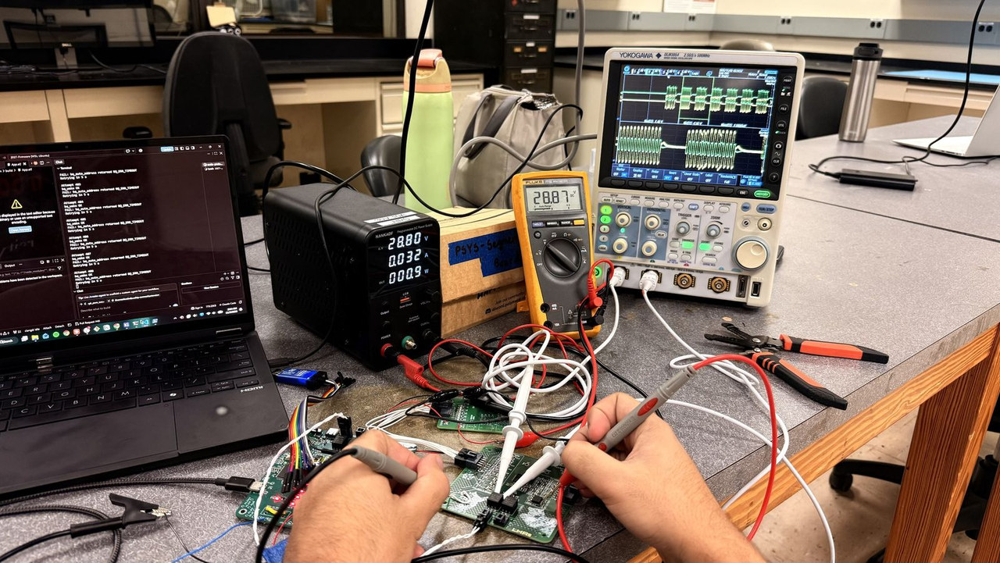
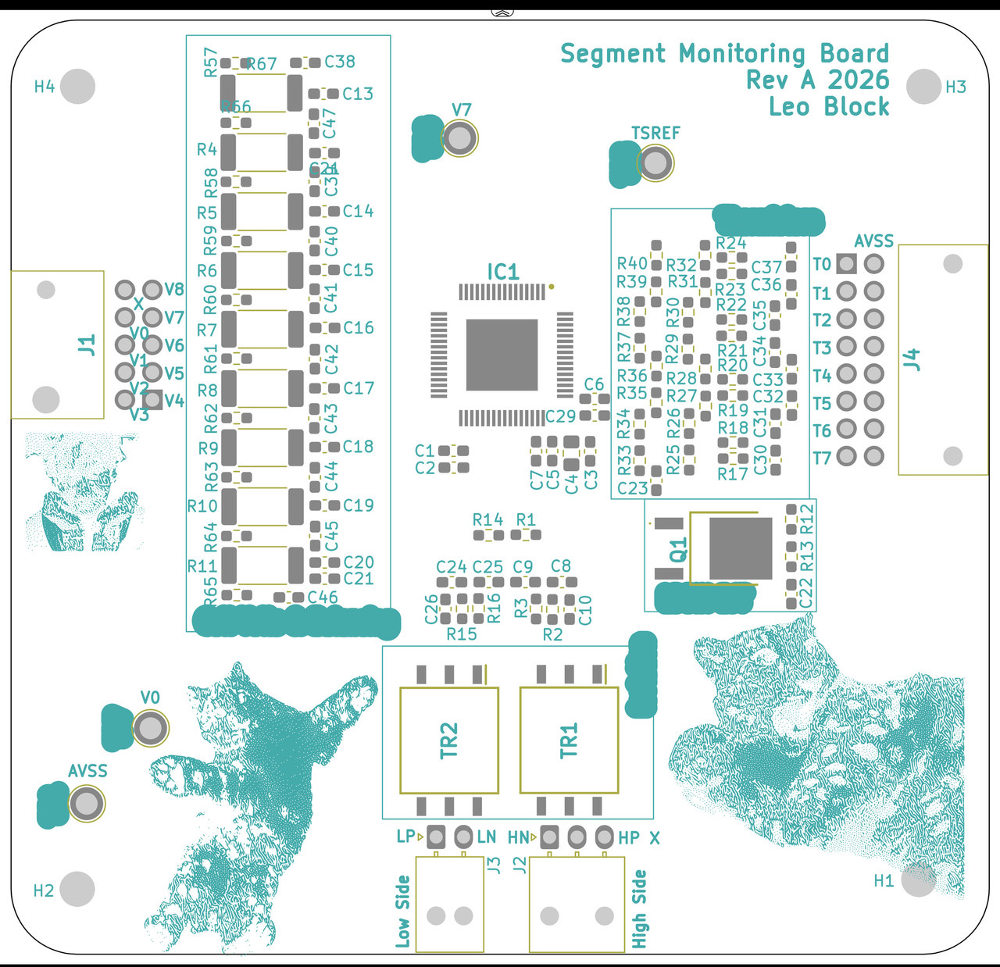
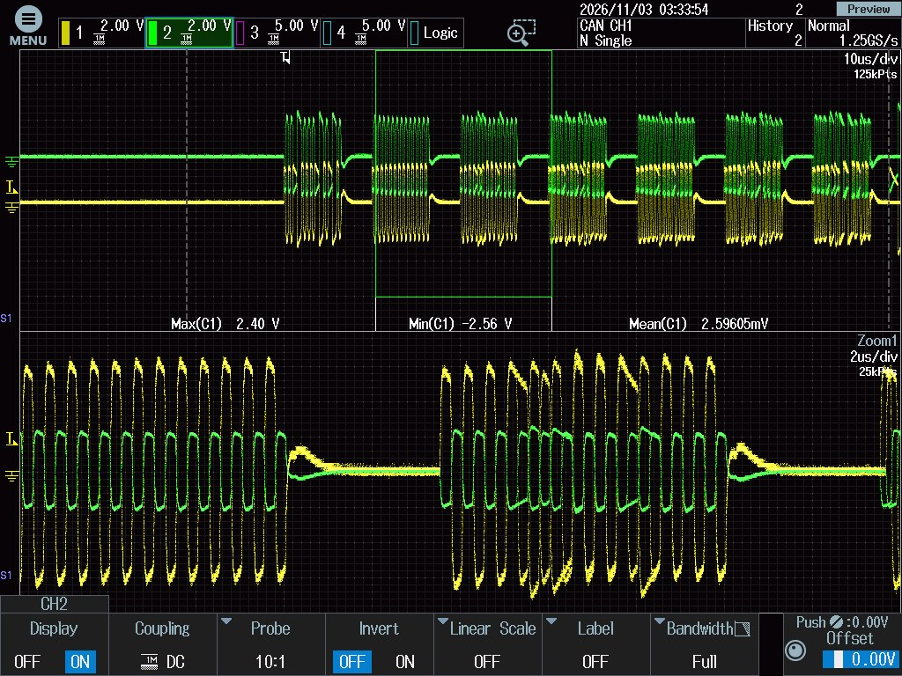
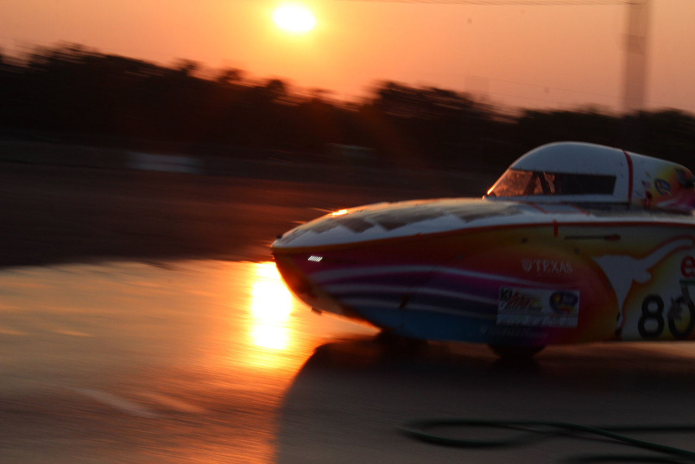
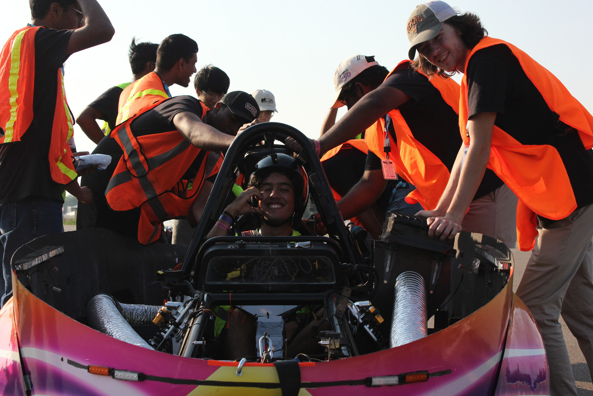
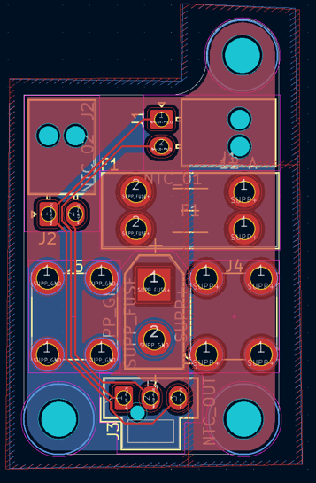
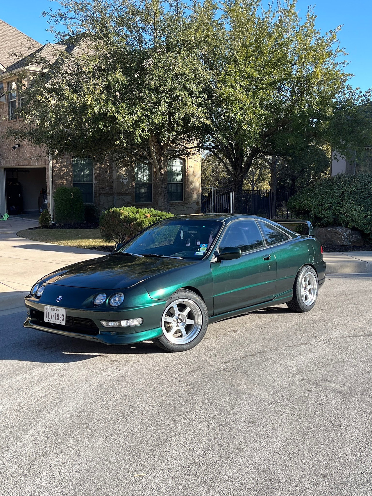
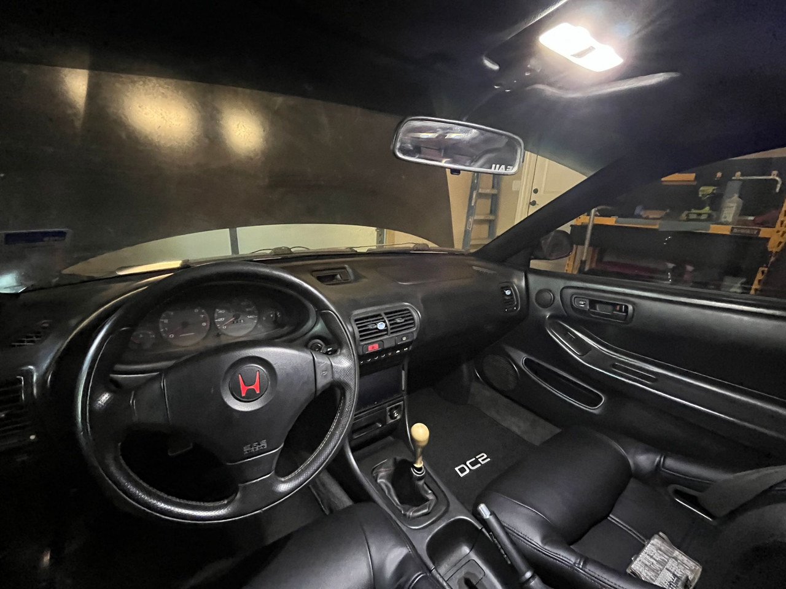

Solar car hardware, from schematic to track
Things I've built
Boards, harnesses, and batteries for Longhorn Racing Solar, plus the car I rewired myself. Open one for the short version, or read the full project.











The SMB is the car's cell monitoring unit. Each board reads 8 cell voltages and 8 thermistors for one segment of the pack and passively balances the cells. Four of them chain in an isolated ring back to the BPS Leader, which decides when the pack is unsafe.
I designed the schematic and layout in KiCad around a TI BQ79616, split it into three ground domains to keep comms noise off the measurements, assembled it in-house, and brought it up on the bench. As of November 2026, two boards are chained to the Leader and reporting.
Read the full projectThis harness connects 14 telemetry boards across 65 feet of cable on High Noon. I routed every branch through the full vehicle CAD in EPLAN, so every wire was cut to its final length before it went near the car.
I wrote 17 pages of build documentation, led a team that was newer to harness work through the build, and inspected all 124 joints. It ran at the 2026 Formula Sun Grand Prix with zero on-track failures, with me in the driver's seat for the dynamics events.
Read the full projectThis 20S1P NiMH pack powers the car's ignition sequence. It replaced an off-the-shelf pack that had logged more than 50 overtemperature events, and the new design cut those to near zero.
I co-owned it from cell selection to test: a KiCad protection board with a 12 A fuse and two thermistors, simulated in LTspice and checked with a scope and thermal camera, and a 3D-printed frame that made the pack 34% smaller and 23% lighter.
Read the full projectI'm leading the full harness for the team's next car. The last car had no pin for CAN cable shielding, so I set a standard 12-pin CAN pinout with two dedicated shield pins on every board and moved the boards to sealed Deutsch DTM connectors.
I modeled every connector on the car in harness.design, 386 of them, with pin names normalized across every board, and I'm now routing it in EPLAN Harness proD. Manufacturing starts in January.
Read the full projectMy own car, picked with a design matrix and bought with money from a weekday job in high school. It has a 30-year-old harness with very little documentation, so every electrical job starts with tracing circuits by hand.
I wired in a CarPlay head unit and backup camera, adapted a Japan-market airbag connector, swapped the whole interior from tan to black, and did the cooling, suspension, and engine work myself.
Read the full projectECE at UT Austin. Building a solar car.
I study Electrical and Computer Engineering at UT Austin and I'm the Wire Harness Project Manager and a Power Systems Engineer on Longhorn Racing Solar. I own the car's wire harness and the battery pack's cell monitoring board, from the schematic to bench bring-up to the track.
I joined the team in 2025 as a Powertrain Engineer, co-owned a custom ignition battery in my first semester, and drove our car, High Noon, at the 2026 Formula Sun Grand Prix. Before that I restored and rewired a 1994 Acura Integra in high school, which is where I learned to check grounds first.
I'm looking for Summer 2027 internships in electrical hardware, wire harness, and power systems engineering.
See my experience2027 vehicle harness / 386 connectors on one CarCAN trunk
Where I've worked
Wire Harness Project Manager and Power Systems Engineer
Longhorn Racing Solar
I own development and integration of the vehicle wire harness in EPlan, including the high voltage and data acquisition harnesses, and cut 5 lbs of harness mass. I built and continuity-tested every circuit to catch wiring faults before installation. I also lead the Segment Monitoring Board for the battery protection system, from schematic and layout through in-house assembly and hardware bring-up.
I teach newer Power Systems members EPlan harness workflows, crimping standards, and connector selection, and coordinate integration timelines with the Enclosures, Power Systems, and Data Acquisition leads. I finalize board-to-harness pinouts with those teams before boards are ordered to avoid repins, and I inspect crimps to catch bad terminations. I also wrote the harness materials ask for Corporate Relations and work directly with a parts donor on the 2027 harness BOM.
On the firmware side, I wrote a thread-safe, mutex-protected RGB LED driver in embedded C for the team's STM32 FreeRTOS firmware so multiple tasks can share status LEDs. I stress-tested it with three tasks writing to one LED at once to prove no writes collide.
Driver, Formula Sun Grand Prix
Longhorn Racing Solar
I drove the team's car, High Noon, in all the dynamics events and track days at FSGP.
Powertrain Engineer
Longhorn Racing Solar
I co-owned the custom 24 V supplemental battery, designed and validated its protection system, and iterated enclosure prototypes for airflow around high-current boards with the Enclosures team. I integrated the 288-cell 32S9P traction pack into its carbon fiber enclosure to the composites team's specs and helped spot-weld its interconnects, then measured parallel-group voltages to catch bad welds. I fit-checked each enclosure prototype to resolve clearance conflicts before vehicle integration, and worked with the car's Mitsuba motor controller.
Engineering Intern
023Voting.org, Emerging Leaders Summer Internship Program
On a six-person team, I built a voter resource website in WordPress and HTML and compiled platform and background data on more than 50 Austin government leaders. I presented the site at Capital Factory to a five-person panel from the City of Austin and Capital Factory.
VEX Robotics Club Officer
Lake Travis High School
Communications and media manager for a team that qualified for the 2024 VEX World Championship and the 2024 Texas UIL State Championship. I programmed in VEX Python.
BS Electrical and Computer Engineering, The University of Texas at Austin. Expected May 2028.
Coursework: Circuit Theory, Software Design and Implementation I, Linear Systems and Signals, Embedded Systems.
SkyWater externship with a clean room tour, paired with an intro to nanotechnology class.
Core skills
- Schematic capture
- PCB layout
- Wire harness design
- BMS
- Hardware bring-up
- CAN bus
- Design validation
- Root cause analysis
EDA and CAD
- KiCad
- Altium Designer
- EPLAN Harness proD
- EPLAN P8
- harness.design
- SolidWorks
- Fusion 360
- LTspice
Lab and manufacturing
- Oscilloscope
- Multimeter
- Bench power supply
- Cell simulator (HIL)
- Thermal camera
- PCB assembly
- Soldering
- Crimping
- Spot welding
- 3D printing
- TIG welding
Languages
- C
- C++
- Python
- JavaScript
- C#
- Java
- HTML
- CSS
Firmware and tools
- STM32 HAL
- FreeRTOS
- OpenOCD
- GDB
- STM32CubeProgrammer
- Git
Certifications
- IT Specialist (Java)
- Autodesk Fusion 360